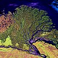

river-delta
phenomenon

Source: Wikipedia
Wikipedia Page (Something wrong with this association? Let us know.)
Wikidata Page (Something wrong with this association? Let us know.)
Occurs in:
- river-delta__mass
- river-delta_subsidence__mean_of_length-per-time_rate
- river-delta__volume
- river-delta_apex_shoreline__min_of_distance
- river-delta_apex__elevation
- river-delta_apex__latitude
- river-delta_apex__longitude
- river-delta_apex__opening_angle
- river-delta_bottomset-beds_sediment_clay__volume_fraction
- river-delta_bottomset-beds_sediment_sand__volume_fraction
- river-delta_bottomset-beds_sediment_silt__volume_fraction
- river-delta_foreset-beds__mean_of_slope
- river-delta_foreset-beds_sediment_clay__volume_fraction
- river-delta_foreset-beds_sediment_sand__volume_fraction
- river-delta_foreset-beds_sediment_silt__volume_fraction
- river-delta_topset-beds_sediment_clay__volume_fraction
- river-delta_topset-beds_sediment_sand__volume_fraction
- river-delta_topset-beds_sediment_silt__volume_fraction
- river-delta_topset-beds~lower_sediment_silt__volume_fraction
- river-delta_topset-beds~upper_sediment_silt__volume_fraction
- river-delta_channel~main_entrance__azimuth_angle_of_velocity
- river-delta_channel~main_entrance__elevation_angle_of_velocity
- river-delta_channel~main_entrance__max_of_depth
- river-delta_channel~main_entrance__mean_of_depth
- river-delta_channel~main_entrance__width
- river-delta_channel~main_entrance_center__elevation
- river-delta_channel~main_entrance_center__latitude
- river-delta_channel~main_entrance_center__longitude
- river-delta_channel~main_entrance_water_sediment_clay__volume_fraction
- river-delta_channel~main_entrance_water_sediment_sand__volume_fraction
- river-delta_channel~main_entrance_water_sediment_sand_grain__mean_of_diameter
- river-delta_channel~main_entrance_water_sediment_silt__volume_fraction
- river-delta_channel~main_entrance_water_sediment~suspended__mass_concentration
- river-delta_channel~main_entrance_water_sediment~suspended_flowing__mass_rate
- river-delta_channel~main_entrance_water_sediment~suspended_transport__mass_rate
- river-delta_channel~main_entrance_water_sediment~suspended__volume_concentration
- river-delta_channel~main_entrance_water_flowing_x-section__volume_rate
- river-delta_channel~main_entrance_water_x-section__volume_flux
- river-delta_channel~main_entrance_water_x-section__wetted_area
- river-delta_channel~main_entrance_water_x-section__wetted_perimeter
- river-delta_channel~main_entrance_water_x-section__width-to-depth_ratio
- river-delta_channel~main_entrance_water_x-section_top__width
- river-delta_channel~main_entrance_x-section__area
- river-delta_channel~main_entrance_x-section_top__width
- river-delta_distributary-network__drainage_density
- river-delta_distributary-network__length
- river-delta_distributary-network_water__max_of_depth
- river-delta_distributary__length
- river-delta_distributary__slope
- river-delta_distributary_outlet__count
- river-delta_distributary_outlet_top__width
- river-delta_distributary_outlet_center__elevation
- river-delta_distributary_outlet_center__latitude
- river-delta_distributary_outlet_center__longitude
- river-delta_distributary_outlet_side~left__elevation
- river-delta_distributary_outlet_side~left__latitude
- river-delta_distributary_outlet_side~left__longitude
- river-delta_distributary_outlet_side~right__elevation
- river-delta_distributary_outlet_side~right__latitude
- river-delta_distributary_outlet_side~right__longitude
- river-delta_distributary_outlet_water_x-section__mean_of_depth
- river-delta_distributary_outlet_water_flowing_x-section__volume_rate
- river-delta_distributary_outlet_water_x-section__volume_flux
- river-delta_front__mean_of_slope
- river-delta_front_sediment__repose_angle
- river-delta_front_sediment_grain__mean_of_diameter
- river-delta_plain~lower-and-plain~upper__area
- river-delta_plain~lower__area
- river-delta_plain~lower__mean_of_slope
- river-delta_plain~subaqueous__area
- river-delta_plain~subaqueous__mean_of_slope
- river-delta_plain_plain~subaqueous__area_ratio
- river-delta_plain__area
- river-delta_plain_boundary__diameter
- river-delta_plain_boundary__perimeter
- river-delta_plain~upper__area
- river-delta_plain~upper__mean_of_slope
- river-delta_plain~upper_boundary~seaward__length
- river-delta_plain~upper_vegetation__mean_of_height
- river-delta_plain~upper~farmed__area_fraction
- river-delta_plain~upper~residential__area_fraction
- river-delta_plain~upper~urban__area_fraction
- river-delta_plain~upper~vegetated__area_fraction
- river-delta_shoreline__geodetic_latitude
- river-delta_shoreline__length
- river-delta_shoreline__longitude
- river-delta_shoreline_progradation__length-per-time_rate
- river-delta_shoreline__x_coordinate
- river-delta_shoreline__y_coordinate
- river-delta_shoreline_sediment_reworking_ocean_water_wave__depth
- river-delta_x-section__area
- river-delta_x-section__dip_angle
- river-delta_x-section__strike_angle
- river-delta~subaerial__volume
- river-delta~subaqueous__volume